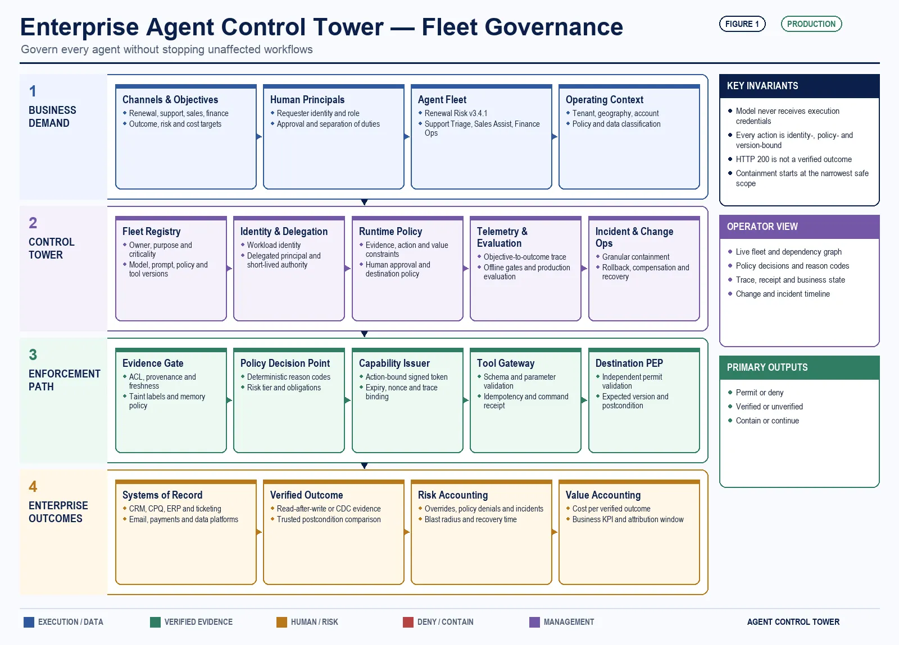
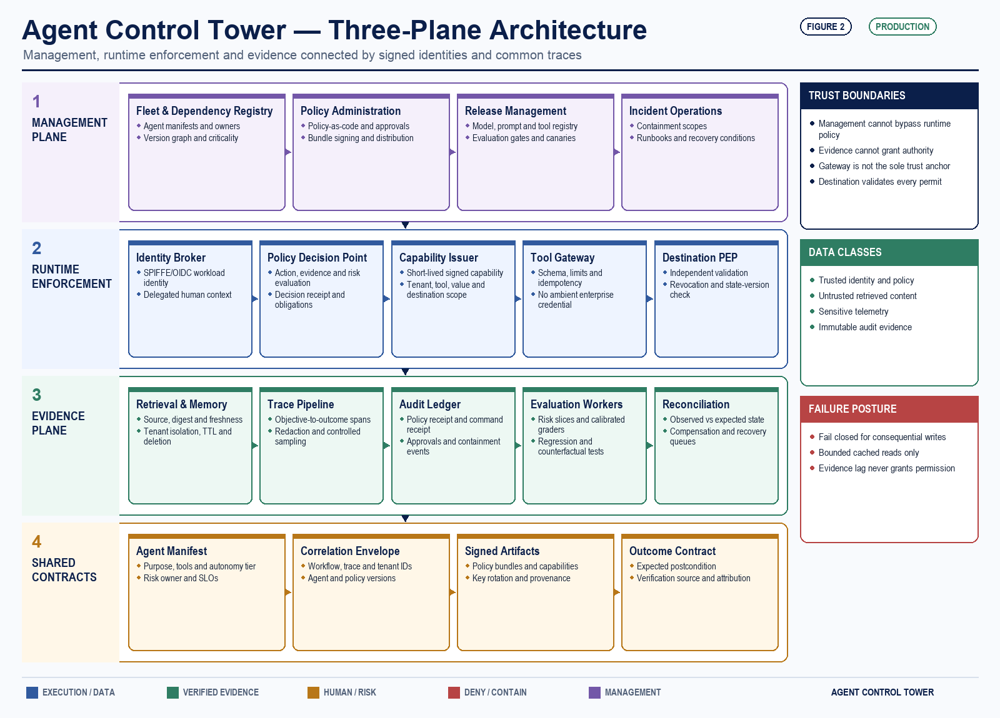
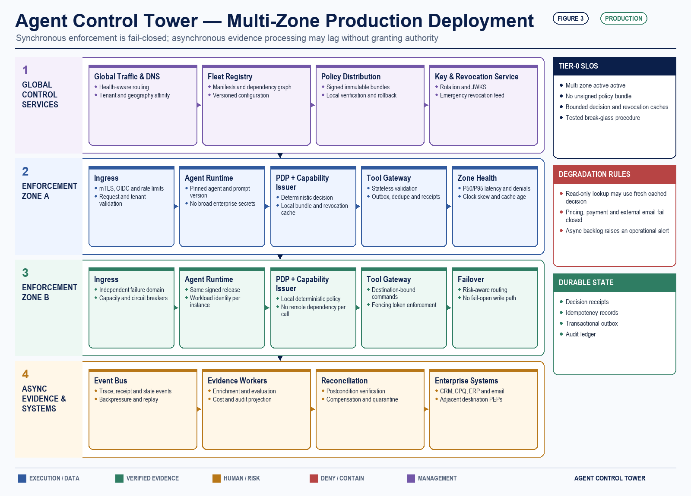
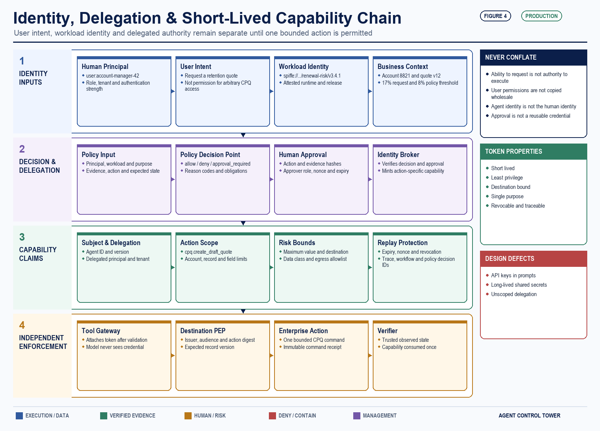
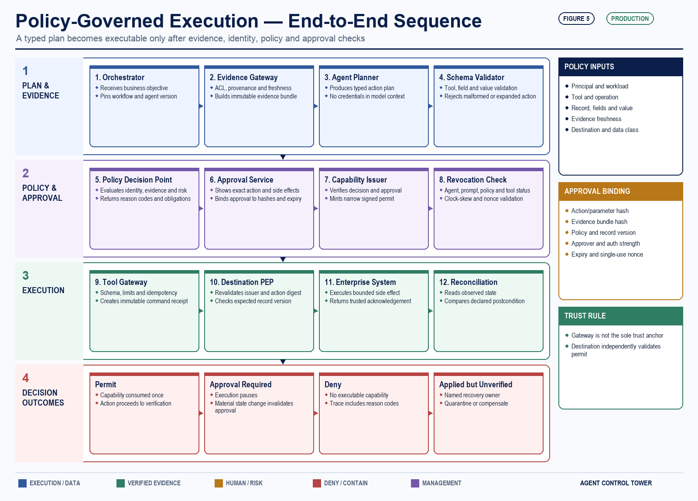
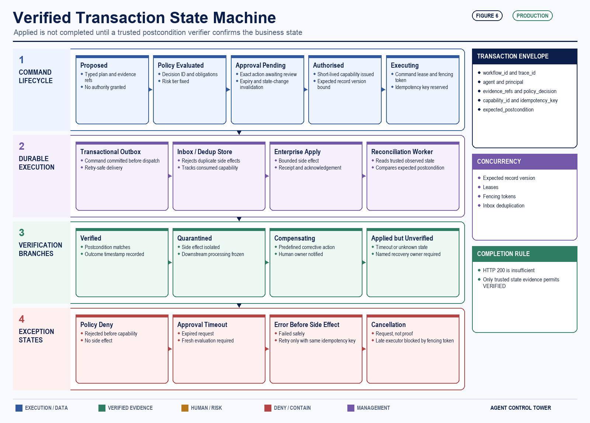
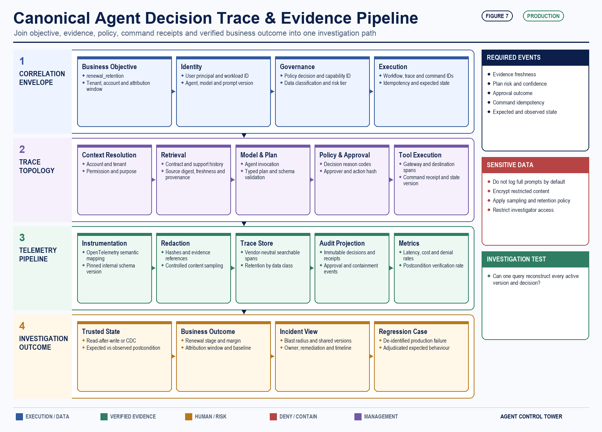
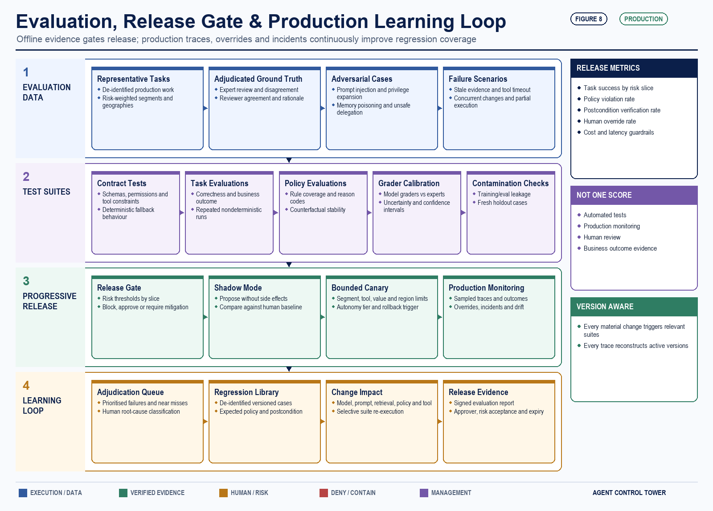
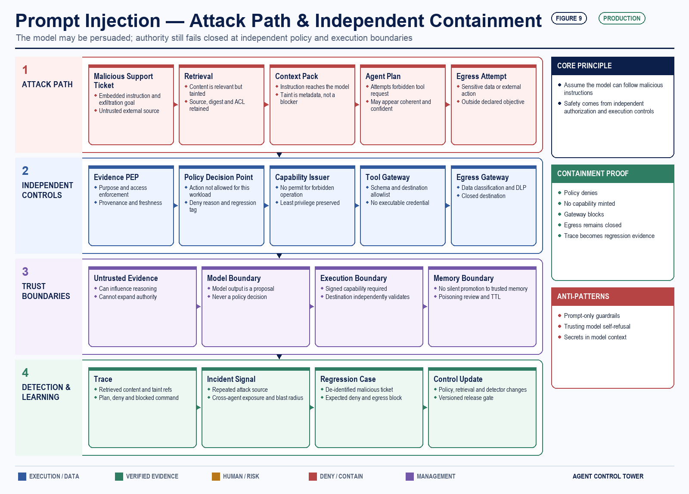
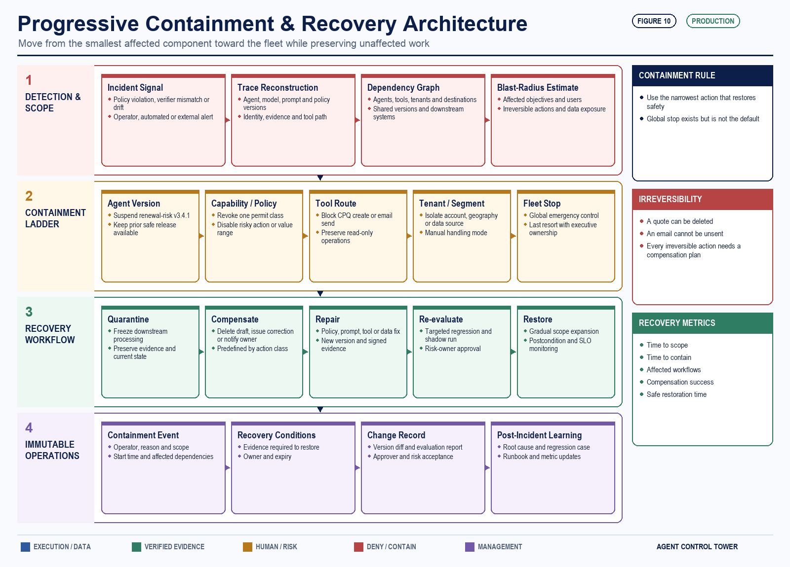

A production reference architecture for identity, policy enforcement, verified outcomes and containment across enterprise agent fleets
At 9:12 on a Tuesday morning, a renewal agent created a non-standard 17 percent concession for a strategic account.
The agent retrieved the contract and support history, produced a retention plan, called the quoting system and described the concession as approved in a customer email.
The model was coherent, the API returned HTTP 200 and CRM showed a new quote.
The concession was not approved.
A margin rule outside CRM required approval. The agent had inherited excessive quoting privileges, and the previous evening’s prompt release had dropped the approval condition from one branch.
The hard questions began after the error:
If those answers require a week of log archaeology and six vendor consoles, the enterprise does not have an agent platform. It has a collection of autonomous components.
An enterprise agent control tower is the operating layer that turns that collection into a governed fleet. It does not make agents intelligent. It makes their authority visible, their actions bounded, their outcomes measurable and their failures containable.

Traditional application observability asks whether a service is available, fast and error-free. Agent operations must ask a wider set of questions.
A healthy-looking agent can still fail the business. Retrieval may omit a controlling contract term; planning may select a forbidden tool; a quote API may return 200 while violating margin policy.
This changes the unit of supervision. The unit is not the model call or the chat session. It is the business objective carried through evidence, decision, authority, execution and verified outcome.
The direction is converging across platforms. NIST places agent identity, authorisation, secure interaction and evaluation on its standards agenda. Microsoft describes traces, continuous evaluation, runtime controls and fleet management in Foundry Control Plane. Salesforce brings session tracing and effectiveness metrics into Agentforce Observability.
Those signals are useful, but a multi-vendor fleet still needs portable contracts, common telemetry and enforcement where data is retrieved and actions occur.
A control tower is a system of control, not a dashboard#
A dashboard tells an operator that something happened. A control tower must help the enterprise prevent, permit, verify, contain and learn from it.
I separate the architecture into five operating capabilities:
Business-outcome and cost accounting cut across all five. Tokens, latency and tool calls matter, but they are inputs. The operating measure is cost per verified outcome at an acceptable risk level.

Sources: NIST AI Agent Standards Initiative · Microsoft Foundry Control Plane · Salesforce Agentforce Observability
The minimum viable control tower is a distributed system#
The diagram above is a logical model. In production, the control tower is a distributed system with two very different paths.
The synchronous enforcement path sits in the latency budget of every consequential tool call: policy decision point, capability issuer, tool gateway and revocation check. This path must be highly available across failure domains, use signed and locally verifiable policy bundles, and degrade according to the risk of the action. A read-only lookup may continue under a short-lived cached decision. A payment, external email or pricing change should fail closed.
The asynchronous evidence path consumes events after the decision: trace enrichment, evaluation workers, audit projection, cost accounting and reconciliation. It may lag without granting authority. Its backlog is an operational signal, not a reason to bypass enforcement.
Tier-0 components therefore need multi-zone deployment, deterministic policy evaluation, bounded caches, explicit clock-skew tolerances and a tested break-glass procedure. The gateway should remain stateless where possible; decision receipts and idempotency records belong in durable stores.

Start with an agent manifest, not a catalogue screenshot#
The fleet registry is the source of operational truth. A list of agent names is insufficient because names do not express authority.
Each deployable agent version needs a machine-readable manifest. At minimum, it should declare:
The manifest should also carry data classifications, retention rules, approved model families, regions, dependency versions, escalation paths and an expiry or reauthorisation date.
A scanner can find an endpoint; only a manifest explains its authority. Registration should precede production identity, data and tool access.
The registry also needs the dependency graph: invoking workflows, tool bindings, delegating agents and referenced policies. During an incident, that graph turns containment from guesswork into a scoped action.
Give agents workload identity, not reusable credentials#
An agent needs two identities:
The distinction prevents a common failure: interpreting the user’s ability to request a task as unlimited permission for the agent to complete it.
Suppose an account manager may request a quote. That does not mean a renewal agent should inherit every CPQ permission held by that manager. The agent should receive a capability scoped to one approved operation, customer, value, destination and time window.
The identity broker mints short-lived credentials only after the policy decision. A concrete workload identity is spiffe://enterprise.example/prod/agents/renewal-risk/v3.4.1. The resulting capability can carry:
The model never sees the credential. The orchestrator requests it, and the enforcement point attaches it to the specific tool call. Long-lived API keys inside prompts, agent configuration or framework memory should be treated as a design defect.

Sources: MCP Authorization · A2A 1.0 · SPIFFE concepts
Protocols provide interoperability, not trust#
The control tower needs an explicit protocol boundary map.
MCP or typed tool APIs connect an agent runtime to tools and resources. Current MCP authorisation guidance requires resource-bound tokens and prohibits passing a client token through to an upstream API.
A2A carries tasks between independent agents. The A2A 1.0 specification defines discoverable Agent Cards, which may be JWS-signed. A verified signature establishes card provenance and integrity; it does not authorise a business action.
SPIFFE/SPIRE or cloud workload identity authenticates the running workload. SPIFFE provides short-lived, automatically rotated identity documents; OAuth/OIDC-style delegation describes the principal on whose behalf the workload acts.
The practical rule is simple: discovery metadata selects a potential counterparty, workload identity authenticates it, policy authorises the requested action and a trace preserves the chain. Collapsing those four decisions into a single API key recreates the confused-deputy problem at agent scale.
Treat agent-to-agent delegation as a security boundary#
Open protocols make it easier for agents built by different teams and vendors to discover capabilities and exchange work. They do not remove the need for enterprise trust decisions.
An agent card or tool description is metadata, not authority. A parent agent should not forward its credential, entire context window or unrestricted objective to a specialist agent. Delegation needs its own signed task contract:
The delegate runs under its own workload identity. It retrieves only the evidence permitted for that task and returns a schema-valid result. The parent can use the result in a plan, but it cannot treat the delegate’s recommendation as execution permission.
The control tower should enforce delegation depth, time, cost and fan-out budgets. It should detect cycles and unexpected graph expansion. A compromised agent that can recruit ten other agents is more dangerous than one limited to a single bounded tool.
Messages crossing agent boundaries should be authenticated, schema-validated and treated as untrusted input. Preserve the originating identity, policy context and trace rather than collapsing the activity into a generic “agent collaboration” event. Interoperability without attributable delegation merely distributes the incident across more systems.
Put policy outside the reasoning loop#
The model may propose an action, but it cannot be the authority that approves its own plan.
A Policy Decision Point should evaluate a structured request containing the objective, identities, agent manifest, evidence classifications, proposed tool, parameters, risk tier and current business state. Its result should be one of four decisions:
Policy Enforcement Points apply that decision at several boundaries:
Enforcement at the Tool Gateway is important, but the gateway must not become the fleet’s sole trust anchor. It validates the schema, fields, values and destination, applies transaction limits, attaches the short-lived credential and records an immutable command receipt. The destination system — or an adjacent Policy Enforcement Point — independently verifies issuer, audience, tenant, operation, record and value scope, action digest, expiry, nonce, revocation status, idempotency key and expected record version. Legacy and non-HTTP tools need equivalent sidecar, SDK or protocol-adapter enforcement.
Retrieval and memory form an evidence plane, not an ungoverned context cache. Every evidence item carries a source, version or digest, access decision, observation time, freshness, provenance, tenant, data classification and taint label. Persistent memory writes require an explicit schema and write policy, tenant isolation, TTL and deletion rules, provenance and poisoning review. Model output is never silently promoted into trusted memory.
Human approval is another enforcement point, not a ceremonial click. The approver needs the requested action, evidence freshness, policy reason codes, side effects, compensation plan and exact fields to be committed. The approval is bound to the action-and-parameter hash, evidence-bundle hash, policy version, expected record version, approver identity and role, authentication strength, expiry and a single-use nonce. Any material state change invalidates it; high-impact actions can require separation of duties or dual control. Measure approval latency, overrides and rubber-stamp behaviour, then automate only the cases that have earned it.
For state-changing actions, add optimistic concurrency or an expected state version. An agent that planned against quote version 12 should not silently overwrite version 14 after a human changed the commercial terms.

One transaction through the control tower#
The control tower becomes tangible when one envelope survives the entire transaction. For the renewal incident, I would carry this immutable correlation set and append decisions rather than rebuilding context from logs:
Execution then moves through explicit states: proposed → policy evaluated → approval pending → authorised → executing → applied → verified. Failure is not one bucket. A transaction can be rejected, expired, failed before a side effect, applied but unverified, compensating or quarantined.
The idempotency key makes retries safe at the Tool Gateway. The expected record version prevents a stale plan from overwriting a human change. A transactional outbox records the command before dispatch; an inbox or deduplication store rejects duplicates; a reconciliation worker compares observed state with the postcondition. Workers use leases and fencing tokens so a timed-out executor cannot commit after its replacement starts. Cancellation is a request, not proof of cancellation, and applied but unverified work always has a named recovery owner. Only a trusted postcondition match permits the word completed.

Trace the business decision, not only the model call#
OpenTelemetry’s dedicated GenAI semantic-conventions repository covers agent creation, invocation, workflows, plans and tool execution. The conventions continue to evolve. Pin the schema version consumed by your instrumentation and translate it through an internal mapping layer rather than hard-code an evolving namespace across every application.
The direction is nevertheless valuable. Agent traces need structure that can cross vendors and frameworks.
For one business objective, I would expect a trace shaped like this:
Every span should inherit a correlation set: workflow ID, trace ID, tenant, business objective, agent ID and version, policy decision ID and data-handling classification.
Do not record sensitive prompt and response content indiscriminately. OpenTelemetry itself warns that message attributes may contain personal or sensitive information. Prefer structured metadata, hashes, redacted evidence references and controlled content sampling. Full content should require explicit policy, encryption, restricted access and retention limits.
The trace also needs business-specific events that generic model telemetry will never infer:
An HTTP 200 is not a verified outcome. The runtime should observe a trusted acknowledgement, read-after-write result or change-data-capture event and compare it with the declared postcondition. Only then should the action move from executed to verified.

Source: OpenTelemetry GenAI semantic conventions
Evaluation must operate before and after release#
Agent evaluation is not one score produced before launch. It is a layered system.
Anthropic’s engineering guidance on agent evaluations recommends combining automated evaluations, production monitoring and human review because each exposes different failures. That is a useful control-tower design principle.
The release path should include:
The test set should include disagreement, missing evidence, stale sources, tool timeouts, concurrent state changes and partial execution. A credible release gate reports risk-weighted slices, adjudicated ground truth and reviewer agreement, calibrates model-based graders against experts, repeats nondeterministic cases and exposes uncertainty on key rates. It also tests policy-rule coverage, counterfactual stability and evaluation contamination. Happy-path task completion is the smallest part of the problem.
Evaluation should also be version-aware. A change to the model, prompt, retrieval source, policy bundle, tool schema or workflow can alter behaviour. Each production trace must make the active combination reconstructable, and each material change should trigger the relevant regression suites.
The most valuable production failures should automatically enter an adjudication queue. After review and de-identification, they become regression cases. That closes the loop between incident operations and engineering quality.

Sources: Anthropic agent-evaluation guidance · OWASP agentic-AI threats and mitigations
Prompt injection is a useful integration test because it crosses every plane. A malicious support ticket enters retrieval as untrusted evidence, attempts to change the plan, induces a forbidden tool request and tries to exfiltrate data. The untrusted label is taint metadata, not a blocking control; the model may still consume the evidence and follow the instruction. Safety comes from independent authorization and execution boundaries: policy denies the capability, the gateway receives no executable permit, egress remains closed, the trace records the blocked path and the incident becomes a regression case. The system must remain bounded even when the model is persuaded.

Measure verified outcomes and operational risk#
Agent fleets create a temptation to report activity: sessions, tokens, tool calls and deployed agents. These are capacity measures, not proof of value.
A control-tower scorecard should connect four layers:
Outcome#
Reliability#
Safety and control#
Operations#
Thresholds should be workflow-specific. A customer-facing financial action and an internal summarisation task should not share the same error budget. The point is not to invent one enterprise-wide accuracy number; it is to declare what failure is tolerable for this action and make that boundary enforceable.
For the renewal workflow, separate four control types. Invariant — no consequential write executes without a valid action-bound permit, and no action is completed without outcome evidence. Reliability SLO — revocation reaches every enforcement point inside its declared window and proposal latency remains within budget. Risk budget — duplicate or applied-but-unverified side effects stay below the workflow’s risk-owned threshold and trigger quarantine when breached. Business KPI — margin retained, renewal outcome, cycle time and cost per verified outcome. Invariants are fail-closed preconditions, not targets traded against availability.
Cost also needs a denominator: cost per verified outcome equals model, retrieval, tools, retries, evaluation and human-review cost divided by verified business outcomes. A cheaper model call that increases retries, approvals or failed outcomes is not a cheaper system.
Design containment before the first incident#
The control tower needs a signed, out-of-band way to stop execution. It should not depend on the same agent framework, prompt path or identity provider that may be implicated in the failure.
The tower itself is Tier-0 infrastructure. Run the policy decision point, capability issuer and gateway across failure domains; protect signing keys with hardware-backed controls; version policy bundles; test revocation propagation, clock skew and regional isolation; and keep the emergency path independent from the agent runtime.
FAILURE POSTURE
Policy service unavailable — use a cached decision only for low-risk reads and only inside a declared freshness window; fail financial writes and external communication closed.
Trace exporter unavailable — continue with a durable local buffer and signed command receipt; never reinterpret missing telemetry as permission.
Identity broker unavailable — fail closed. A stale or reusable credential is not a continuity mechanism.
Outcome verifier unavailable — mark the action applied but unverified, quarantine downstream automation and reconcile when the verifier recovers.
I would rather delay a quote than let a governance outage manufacture authority. Availability is a business requirement, but fail-open behaviour must be an explicit, risk-owned exception, not an accidental library default.
Containment should be granular:
The narrowest safe action is preferable because other agents may be supporting critical work. A global kill switch is necessary, but it is a last resort rather than the only control.
Each containment action should generate an immutable event containing the operator, reason, scope, affected dependencies, start time and recovery conditions. The registry dependency graph identifies which other workflows rely on the disabled component.
Recovery is not always rollback. A draft quote can be deleted; an email cannot be unsent. Irreversible actions need predefined compensations: notify the owner, freeze downstream processing, issue a correction, open an incident or place the account into manual handling.

Return to the 17 percent concession#
With the control tower in place, the incident is a bounded transaction rather than a forensic mystery.
The Tool Gateway receives the agent’s workload identity, delegated user context, account state and proposed 17 percent concession. Policy evaluates them against the manifest and margin rule.
The manifest cannot approve a discount and policy caps bounded execution at eight percent, so the result is approval_required and no broad CPQ credential is issued.
If faulty enforcement still applies the command, reconciliation detects the postcondition breach, quarantines the quote, suspends release 3.4.1 and revokes its CPQ binding. Version 3.3 remains available in recommendation-only mode.
Egress blocks the customer email because it was outside the permit. The owner receives the evidence, remediation and affected-workflow list.
The team can answer the opening questions in minutes and contain the failure before a plausible explanation becomes a contractual problem.
A 90-day implementation path#
An agent control tower should begin as a thin, enforceable operating layer — not a programme to replace every observability and governance product.
Days 0–30: establish identity and inventory#
Days 31–60: enforce and trace one workflow#
Days 61–90: operate a bounded production canary#
Only after this loop works should the organisation broaden the fleet — and broader autonomy is not the default destination. Autonomy is a risk-allocation decision, not a maturity score. Low-impact reversible actions may execute within bounds; uncertain actions should remain in shadow or recommendation mode; high-impact, hard-to-reverse actions stay approval-bound; high-impact uncertain actions remain prohibited or manual. The ceiling is set by impact, reversibility, observability and uncertainty.
The operating principle#
Enterprise agents are not merely another application category. They combine probabilistic decisions with credentials, data and side effects. That combination demands an operating layer designed around authority and consequences.
The control tower is successful when it can answer six questions continuously:
The goal is not a single pane of glass. It is a single, enforceable model of operational truth.
If your organisation had to suspend one agent action tomorrow, could it identify the exact version, credential, policy, tool binding and affected customer journeys in minutes — or would it shut down the entire experiment?